Capítulo 5. Conectores
Projetar e implementar a funcionalidade e gerenciar os dados de sistemas modernos de software grandes, complexos, distribuídos e multilíngues é, sem dúvida, muito difícil. Como discutido nos capítulos anteriores, modelos arquitetônicos de software iniciais de componentes do sistema, seus serviços-chave, seus comportamentos abstratos e suas propriedades não funcionais são indispensáveis nesse empreendimento. No entanto, a experiência tem mostrado repetidas vezes que tomar decisões de design arquitetônico que envolvam integrar esses componentes de forma eficaz e garantir a interação adequada entre eles em um sistema é igualmente importante. Além disso, tomar decisões de design como essas pode ser ainda mais desafiador do que aquelas restritas ao desenvolvimento de funcionalidades. A importância particular nos sistemas modernos de mecanismos para montar componentes funcionais e apoiar sua interação, ou seja, conectores de software, exige que sejam tratados e estudados separadamente. Faremos exatamente isso neste capítulo e voltaremos a esse assunto repetidamente ao longo do restante do livro.
Simplificando, conectores de software realizam a transferência de controle e dados entre componentes. Conectores também podem fornecer serviços, como persistência, invocação, mensagens e transações, que são em grande parte independentes das funcionalidades dos componentes interagindo. Esses serviços geralmente são considerados "componentes de instalações" em padrões de middleware amplamente utilizados, como CORBA, DCOM e RMI. No entanto, reconhecer essas funcionalidades como conectores ajuda a esclarecer uma arquitetura e manter o foco dos componentes em preocupações específicas da aplicação e do domínio. Tratar esses serviços como conectores em vez de componentes também pode fomentar seu reuso entre aplicações e domínios. Talvez o mais importante, os conectores permitem que arquitetos e engenheiros compunham funcionalidades heterogêneas, desenvolvidas em diferentes épocas, em diferentes locais, por diferentes organizações. Assim, os conectores podem ser considerados de forma bastante apropriada como os guardas na porta de separação de preocupações.
Um equívoco comum sobre conectores de software é que eles são apenas chamadas entre dois componentes, no modo de, por exemplo, uma invocação de método Java. Uma visão um pouco mais avançada, inspirada pelo desenvolvimento de sistemas baseados em middleware, é que as interações entre componentes ocorrem por meio de passagem de mensagens e chamadas de procedimentos remotos (RPC). Embora frequentemente aconteça que dois componentes eventualmente sejam implementados para se comunicar usando, por exemplo, uma chamada de método Java, é importante perceber que, como arquiteto de um sistema de software, você não está restrito a assumir e depender apenas desses mecanismos primitivos de interação.
Abordagens tradicionais de engenharia de software adotam uma visão bastante restrita dos conectores, que dificilmente será aplicável com sucesso em todas as situações de desenvolvimento. Esse problema é ainda mais agravado pelo aumento do foco no desenvolvimento usando grandes componentes prontos a usar, provenientes de múltiplas fontes. À medida que os componentes se tornam mais complexos e heterogêneos, as interações entre eles tornam-se determinantes mais críticos das propriedades do sistema. A experiência mostrou que integrar componentes com suposições inadequadas sobre seu ambiente é difícil e pode levar a muitos problemas. Cabe aos conectores mitigar essas incompatibilidades.
Um arquiteto possui uma ampla gama de opções de conectores que são aplicáveis, e frequentemente personalizáveis, a diferentes necessidades e cenários de desenvolvimento. Por exemplo, um arquiteto pode escolher usar um conector que distribui uma requisição de serviço para componentes destinatários nomeados especificamente ou um conector que transmite uma notificação de um evento local para qualquer componente (não nomeado e até desconhecido) que possa estar interessado e ouvindo. O conector pode exigir que o componente remetente suspenda seu processamento até que um reconhecimento de sua solicitação seja recebido, ou pode permitir que o componente remetente continue com seu processamento; o conector pode rotear cada requisição na ordem em que a recebeu, ou pode tentar ordenar, filtrar ou combinar requisições de acordo com alguma regra pré-especificada; e assim por diante. Portanto, uma dimensão muito importante do trabalho de um arquiteto de software é:
O objetivo deste capítulo é fornecer insights, diretrizes e técnicas específicas para apoiar o cumprimento dessas tarefas. O restante do capítulo irá introduzir:
Ao longo do capítulo, forneceremos exemplos de conectores de software específicos para ilustrar a discussão. O leitor provavelmente estará familiarizado com muitos desses conectores, embora às vezes sob um nome diferente. O capítulo começa com um exemplo simples e concreto, para preparar o terreno para a discussão subsequente.
Este capítulo fornece um tratamento detalhado dos conectores. O tipo e a quantidade de informações fornecidas são necessários para o estudo minucioso. Ao mesmo tempo, parte do conteúdo pode ser inadequado para um leitor inexperiente. Recomendamos que todos leiam pelo menosSeções 5.1através5.4assim comoSeções 5.7através5.10.Seção 5.5contém um conjunto de exemplos do domínio de sistemas de distribuição de dados em grande escala, que podem ser seguidos pela maioria dos leitores, mas sua compreensão completa pode exigir experiência prévia com esses tipos de sistemas.Seção 5.6é apropriado para todos os leitores, mas é direcionado, em particular, a profissionais experientes e leitores interessados em diretrizes práticas para construir conectores avançados.
Resumo deCapítulo 5
CONECTORES EM AÇÃO: UM EXEMPLO MOTIVADOR
Uma propriedade útil dos conectores é que, em sua maioria, são elementos arquitetônicos independentes da aplicação. Isso significa que eles nos permitem entender muito sobre como um sistema de software realiza suas tarefas sem necessariamente saber exatamente o que o sistema faz. Em outras palavras, conectores apoiam diretamente dois princípios-chave da engenharia de software: abstração e separação de preocupações. Focar explicitamente nos conectores também permite o desenvolvimento e uso de um vocabulário específico de interação com software. Por sua vez, concordar com a terminologia adequada nos permite comunicar facilmente e raciocinar com precisão sobre várias propriedades do sistema de software que derivam das interações entre os componentes do sistema. Para ilustrar isso, usamos um exemplo muito simples envolvendo dois tipos diferentes de conectores. Usamos intencionalmente a terminologia associada a esses conectores sem defini-la, para chamar atenção para essa nova "linguagem". As definições e explicações apropriadas serão dadas nas seções seguintes. No entanto, provavelmente você perceberá que está familiarizado com parte, senão a maioria, dessa terminologia.
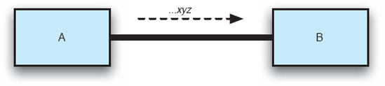
Figura 5-1. Uma arquitetura simples de pipe e filtro composta por dois filtros, A e B, que se comunicam via fluxos de dados não tipados através do conector de tubo unidirecional P.
Diferentes visões de um conector de software são úteis para tarefas diferentes. Para modelar um sistema e comunicar suas propriedades, uma visão de alto nível é adequada. Por exemplo, um arquiteto pode fazer a seguinte afirmação concisa, porém significativa, sobre a configuração mostrada na Figura 5-1: "Os Componentes A e B se comunicam via um pipe Unix." Essa declaração pode ser acompanhada de uma especificação formal do comportamento geral do cano. No entanto, uma descrição tão detalhada não nos ajuda a entender todas as propriedades do tubo, como ele pode ser adaptado ou sob quais condições pode ser substituído por outro tipo de conector. Uma visão mais detalhada e de nível inferior é necessária para isso.
Em particular, o pipe na Figura 5-1 permite a interação por meio de fluxos de dados não formatados. É um conector simples: consiste em um único canal de interação, ou duto, e facilita apenas a transferência unidirecional de dados. Assim, a cardinalidade do tubo é um único emissor e um único receptor. Você se lembrará dos capítulos anteriores que um tubo permite que os componentes (isto é, filtros) A e B apresentem acoplamento muito baixo: os componentes não possuem nenhum conhecimento uns sobre os outros. Por exemplo, a tarefa de A é apenas transferir seus dados com sucesso para o pipe; o destinatário real (se houver) não é importante para A. Por sua vez, o pipe específico representado na Figura 5-1 não armazena os dados em buffer. Ele tenta entregar os dados no máximo uma vez; Se o destinatário não conseguir receber os dados por algum motivo, eles serão perdidos.
Vamos agora supor que precisamos alterar a forma como A e B interagem, de modo que B também possa enviar informações (por exemplo, confirmação do recebimento de dados) de volta para A. Além disso, queremos garantir a entrega dos dados: se o destinatário não estiver disponível, o pipe tenta novamente enviar até que os dados sejam transferidos com sucesso. Ambas as modificações podem ser potencialmente acomodadas por canos. A primeira modificação exigiria a introdução de outro pipe de B para A, e a segunda, buffering de dados em um pipe. A adição de quaisquer outros componentes ao sistema exigiria a adição e/ou substituição adicional dos canos. A penalidade que pagaríamos é que essas modificações podem exigir um tempo substancial de inatividade do sistema. Portanto, os canos podem acomodar esses novos requisitos, mesmo que adicioná-los e substituí-los constantemente possa não ser a solução mais eficaz.
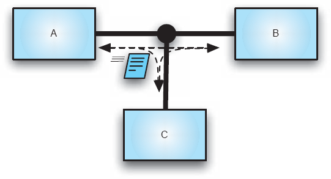
Figura 5-2. Uma arquitetura baseada em eventos composta por dois componentes, A e B, que se comunicam por meio de pacotes de dados discretos tipados (eventos) através do conector do barramento de eventos E. O conector permite modificações de sistema em tempo real, como adicionar um novo componente C.
Se, no entanto, quisermos mudar a natureza dos dados de um fluxo de bytes não formatado para pacotes discretos e tipados que possam ser processados de forma mais eficiente pelos componentes interagindo, os pipes não serão suficientes. Nesse caso, um conector de barramento de eventos será uma alternativa mais adequada. Embora sejam claramente diferentes tipos de conectores, os tubos e barramentos de eventos apresentam várias propriedades semelhantes, como acoplamento frouxo de componentes, comunicação assíncrona e possível buffering de dados. Ao mesmo tempo, barramentos de eventos são mais adequados para suportar adaptação do sistema: um conector de barramento de eventos é capaz de estabelecer dutos entre componentes interagindo em tempo real; sua cardinalidade é um único emissor de evento (semelhante ao pipe), mas múltiplos observadores. Assim, em princípio, barramentos de eventos permitem que componentes sejam adicionados ou removidos, e que se assinem para receber certos eventos, a qualquer momento durante a execução do sistema. A Figura 5-2 retrata de forma abstrata o uso de um barramento de eventos para acomodar as mudanças acima.
FUNDAÇÕES DE CONECTORES
Os blocos básicos e fundamentais subjacentes de cada conector são os primitivos para gerenciar o fluxo de controle (isto é, alterar o contador de programa do processador) e o fluxo de dados (isto é, realizar o acesso à memória) em um sistema. Essas primitivas fornecem poder conceitual suficiente para construir conectores sofisticados e complexos. Além dessas primitivas, cada conector mantém um ou mais canais, também chamados de dutos, que são usados para ligar os componentes interagentes e suportar o fluxo de dados e o controle entre eles. Um duto é necessário para realizar um conector, mas por si só, ele não oferece serviços adicionais de interação. Conectores muito simples, como os modulos linkers, prestam seu serviço simplesmente formando dutos entre os componentes. Outros conectores complementam os dutos com alguma combinação de dados e fluxo de controle para fornecer serviços de interação mais ricos. Conectores muito complexos também podem ter uma arquitetura interna que inclui computação e armazenamento de informações. Por exemplo, um conector de balanceamento de carga executaria um algoritmo para comutar o tráfego de entrada entre um conjunto de componentes com base no conhecimento sobre o estado atual e passado da carga dos componentes.
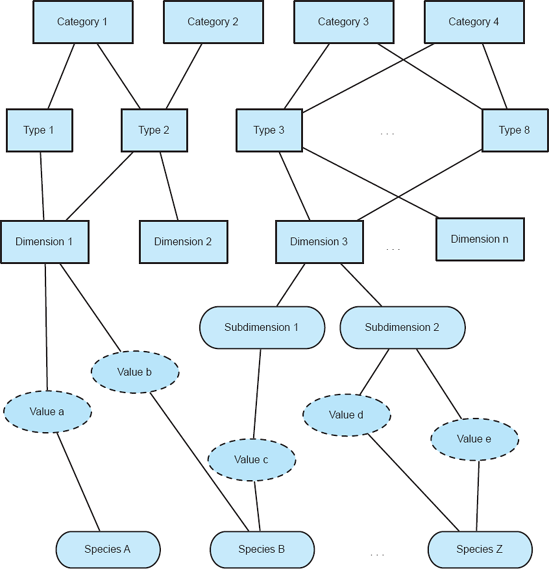
Figura 5-3. Um framework para estudar conectores de software.
Conectores simples são tipicamente implementados em linguagens de programação. Por outro lado, conectores compostos são obtidos por meio da composição de vários conectores (e possivelmente componentes), e geralmente são fornecidos como bibliotecas e estruturas. Conectores simples fornecem apenas um tipo de serviço de interação, enquanto conectores compostos podem combinar muitos tipos de interações. Conectores complexos podem ajudar a superar as limitações das linguagens de programação modernas. No entanto, ao criar tais conectores, é importante ser capaz de raciocinar sobre seus mecanismos de interação subjacentes de baixo nível, identificar as escolhas de design apropriadas e detectar possíveis incompatibilidades entre os mecanismos de interação usados para compor um conector.
Para isso, usaremos o framework de classificação de conectores mostrado na Figura 5-3: Cada conector é identificado por sua categoria de serviço principal e refinado com base nas escolhas feitas para realizar esses serviços. As características mais comumente observadas entre os conectores estão posicionadas em direção ao topo da estrutura, enquanto as variações estão localizadas nas camadas inferiores. A estrutura compreende categorias de serviço, tipos de conectores, dimensões (e possivelmente suas subdimensões) e valores para as dimensões. Uma categoria de serviço representa o papel amplo de interação que o conector cumpre. Tipos de conectores discriminam entre conectores com base na forma como os serviços de interação são realizados. Os detalhes arquitetonicamente relevantes de cada tipo de conector são capturados por meio das dimensões e, possivelmente, de outras subdimensões. Finalmente, a camada mais baixa do framework é formada pelo conjunto de valores que uma dimensão (ou subdimensão) pode assumir. Note que uma instância conectora específica (ou seja, espécie) pode tomar vários valores de diferentes tipos. Em outras palavras, essa classificação não resulta em uma hierarquia estrita, mas sim em um grafo acíclico direcionado.
O restante deste capítulo descreve com mais detalhes o arcabouço de classificação e uma taxonomia abrangente que pode ser usada como base para estudar, classificar e usar conectores de software.
ROLOS DE CONEXÃO
Um conector de software pode fornecer uma ou mais de quatro classes gerais de serviços: comunicação, coordenação, conversão e facilitação. Em outras palavras, um conector pode desempenhar um ou mais desses quatro papéis. Como esses serviços, ou papéis, descrevem completamente a gama de possíveis interações com componentes de software, a camada superior em nosso framework de classificação da Figura 5-3 é a categoria de serviço. A seguir-se discussões e exemplos simples das quatro classes de serviço.
Comunicação
Conectores que fornecem serviços de comunicação suportam a transmissão de dados entre componentes. Os serviços de transferência de dados são um dos principais blocos de construção da interação de componentes. Os componentes rotineiramente transmitem mensagens, trocam dados a serem processados e comunicam resultados de cálculos.
Coordenação
Conectores que fornecem serviços de coordenação apoiam a transferência de controle entre componentes. Os componentes interagem passando o thread de execução entre si. Chamadas de função e invocações de métodos são exemplos de conectores de coordenação. Conectores de ordem superior, como sinais e conectores de balanceamento de carga, proporcionam interações mais ricas e complexas construídas em torno de serviços de coordenação.
Conversão
Conectores que fornecem serviços de conversão transformam a interação exigida por um componente em a fornecida por outro. Permitir que componentes heterogêneos interajam entre si não é uma tarefa trivial. Descompassos de interação são um grande obstáculo na composição de grandes sistemas. As incompatibilidades são causadas por suposições incompatíveis feitas pelos componentes sobre o tipo, número, frequência e ordem das interações em que devem interagir com outros componentes. Os serviços de conversão permitem que componentes que não foram especificamente adaptados entre si estabeleçam e conduzam interações. A conversão de formatos de dados e wrappers para componentes legados são exemplos de conectores que fornecem esse serviço de interação.
Facilitação
Conectores que fornecem serviços de facilitação mediam e otimizam a interação entre componentes. Mesmo quando os componentes foram projetados para interoperar entre si, pode haver necessidade de fornecer mecanismos para facilitar e otimizar ainda mais suas interações. Mecanismos como balanceamento de carga, serviços de agendamento e controle de concorrência podem ser necessários para atender a certos requisitos não funcionais do sistema e para reduzir interdependências entre componentes interagindo.
Todo conector fornece serviços que pertencem a pelo menos uma dessas quatro categorias. Comumente, porém, conectores fornecem múltiplos serviços para satisfazer a necessidade de um conjunto mais rico de capacidades de interação. Por exemplo, a chamada de procedimentos, um dos tipos de conectores de software mais utilizados, oferece tanto serviços de comunicação quanto de coordenação.
TIPOS DE CONECTORES E SUAS DIMENSÕES VARIADAS
Serviços de interação categorizam amplamente os conectores, mas deixam muitos detalhes sem explicação. Esse nível de abstração não pode nos ajudar a construir novos conectores, nem pode ser usado para modelá-los e analisá-los em uma arquitetura. Portanto, classificamos ainda os conectores em oito tipos diferentes, com base na forma como eles realizam serviços de interação:
Tipos de conectores são o nível em que arquitetos normalmente consideram as interações ao modelar sistemas.
Conectores simples podem ser modelados no nível dos tipos de conectores; Seus detalhes muitas vezes podem ser deixados para o design e implementação de baixo nível. Por outro lado, conectores mais complexos frequentemente exigem que muitos de seus detalhes sejam decididos no nível arquitetônico para que o impacto dessas decisões possa ser estudado cedo e em escala sistêmica. Esses detalhes representam variações nas instâncias dos conectores e são tratados como dimensões de conectores na classificação abaixo. Por sua vez, cada dimensão possui um conjunto de valores possíveis. A seleção de um único valor de cada dimensão resulta em uma espécie conectora concreta. As dimensões instanciadas de um único tipo de conector formam conectores simples; Usando dimensões de diferentes tipos de conectores, resulta em uma espécie de conector composto (de ordem superior).
O restante desta seção descreverá as principais características de cada tipo de conector, bem como seus pontos de variação. Além disso, destacaremos o(s) papé(s) de interação desempenhado(s) por cada tipo de conector. A discussão se baseia extensivamente na taxonomia dos conectores apresentada por Nikunj Mehta, Nenad Medvidović e Sandeep Phadke (Mehta, Medvidović e Phadke 2000). Deve-se notar que as características dos diferentes conectores introduzidos têm a intenção de cobrir todo o espaço dos conectores. No entanto, é possível que um conector individual de um dado tipo não possua as dimensões desse tipo. As características detalhadas dos conectores apresentadas abaixo podem ser consideradas como modelos de design que arquitetos de software podem usar para selecionar os conectores exatos necessários em um determinado sistema. Como será discutido mais adiante emCapítulo 6, várias notações de modelagem da arquitetura de software suportam diferentes variações desse processo de seleção.
Conectores de Chamadas de Procedimento
Conectores de chamadas de procedimento modelam o fluxo de controle entre componentes por meio de várias técnicas de invocação. Portanto, são conectores de coordenação. Além disso, chamadas de procedimento realizam a transferência de dados entre os componentes interagindos por meio do uso de parâmetros e valores de retorno. Portanto, eles também são conectores de comunicação. Esses conectores estão entre os mais amplamente usados e mais compreendidos, e têm sido comparados à linguagem assembly da interação de software. Exemplos de conectores de chamadas de procedimentos incluem métodos orientados a objetos, fork e exec em ambientes do tipo Unix, invocação de retorno de chamada em sistemas baseados em eventos e chamadas de sistemas operacionais. Chamadas de procedimento são frequentemente usadas como base para conectores compostos, como chamadas remotas de procedimento ou RPC, que também realizam serviços de facilitação.
O espaço de opções disponível para um engenheiro de software para construir conectores de chamadas de procedimentos é mostrado na Figura 5-4. Note que os valores para certas dimensões e subdimensões não são mostrados: múltiplos versus ponto de entrada único, assim como a cardinalidade de ventilador de entrada e de saída. Essas são subdimensões numéricas que assumem um valor óbvio (1 no caso de um único ponto de entrada) ou podem assumir muitos valores (no caso das três subdimensões restantes). Por isso, são omitidos por simplicidade; Também omitimos os valores de todas essas dimensões e subdimensões no caso dos outros sete tipos de conectores.
Um conector típico de chamada de procedimento em nível de linguagem de programação assume um conjunto específico de valores a partir das escolhas representadas na figura. Por exemplo, como a maioria dos usuários de Java saberá facilmente, uma chamada de procedimento (ou seja, de método) fornece a transferência de dados de seus parâmetros por referência; pode ter um valor de retorno, a menos que o método invocado seja declarado como um void; ele terá um único ponto de entrada, no início do método invocado; será resultado de invocação explícita; sua sincronicidade será bloqueadora; sua cardinalidade fan in e fan Out serão ambas 1 — ou seja, uma chamada de método Java sempre tem uma única fonte e um único destino; Por fim, sua acessibilidade pode ser pública ou privada.
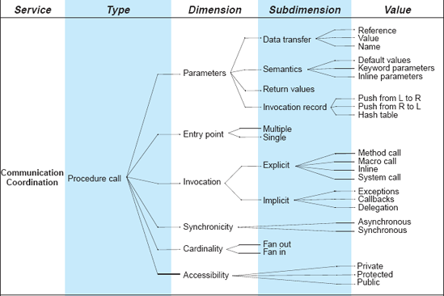
Figura 5-4. Procedimento chamado tipo de conector e suas variações.
Neste ponto, não se espera necessariamente que o leitor compreenda todas as várias dimensões, subdimensões e valores desse tipo de conector, ou todos os pontos de variação dos sete tipos restantes de conectores discutidos abaixo e representados na Figura 5-5 até a Figura 5-11. Um dos objetivos deste capítulo é sensibilizar o leitor para a riqueza e a potencial complexidade do espaço dos conectores de software. O restante do capítulo continuará destacando apenas os aspectos representativos ou particularmente interessantes de cada tipo de conector.
Conectores de Eventos
David Rosenblum e Alexander Wolf definem um evento como o efeito instantâneo da terminação (normal ou anormal) da invocação de uma operação sobre um objeto, que ocorre na localização desse objeto (Rosenblum e Wolf 1997). Conectores de eventos são semelhantes aos conectores de chamada de procedimento, pois afetam o fluxo de controle entre os componentes e, assim, fornecem serviços de coordenação. Nesse caso, o fluxo é precipitado por um evento. Uma vez que o conector de eventos toma conhecimento da ocorrência de um evento, ele gera mensagens (isto é, notificações de evento) para todas as partes interessadas e cede o controle aos componentes para processar essas mensagens. Mensagens podem ser geradas após a ocorrência de um único evento ou de um padrão específico de eventos. O conteúdo de um evento pode ser estruturado para conter mais informações sobre o evento, como o horário e o local de ocorrência, e outros dados específicos da aplicação. Conectores de eventos, portanto, também fornecem serviços de comunicação.
Conectores de evento também diferem das chamadas de procedimentos, pois conectores virtuais são formados entre componentes interessados nos mesmos temas de eventos, e esses conectores podem aparecer e desaparecer dinamicamente dependendo dos interesses em mudança dos componentes. Sistemas distribuídos baseados em eventos dependem da noção de tempo e ordenação das ações. Portanto, dimensões como causalidade, atomicidade e sincronicidade desempenham um papel crítico nos mecanismos de conectores de eventos. Conectores de eventos são encontrados em aplicações distribuídas que exigem comunicação assíncrona. Um exemplo é um aplicativo de janelas (como o X Windows no Unix), onde entradas de interface gráfica servem como eventos que ativam o sistema. Por fim, alguns eventos, como interrupções, falhas de página e armadilhas, são acionados por hardware e depois processados por software. Esses eventos podem afetar propriedades globais do sistema, tornando importante capturá-los em arquiteturas de software.
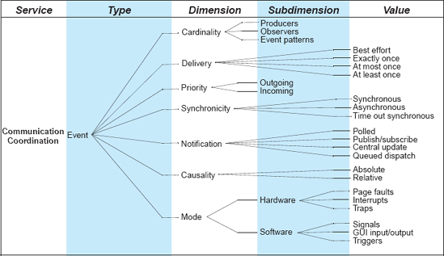
Figura 5-5. Tipo de conector de evento e suas variações.
O espaço de opções disponíveis para um engenheiro de software para construir conectores de eventos é mostrado emFigura 5-5. Por exemplo, a cardinalidade de um conector de evento multicast (lembre-se da discussão sobre o estilo arquitetônico C2 emCapítulo 4) será um único produtor e múltiplos componentes de observador; Idealmente, o conector suportará a entrega de dados exatamente uma vez (o que for enviado pelo componente de origem é entregue aos componentes destinatários); sua sincronicidade pode ser assíncrona (ou seja, não bloqueante); poderia usar o mecanismo de notificação de publicação/assinatura; e assim por diante.
Conectores de Acesso a Dados
Conectores de acesso a dados permitem que componentes acessem dados mantidos por um componente de armazenamento de dados. Por isso, eles oferecem serviços de comunicação. O acesso a dados frequentemente requer preparação do armazenamento de dados antes e limpeza após a conclusão do acesso. Caso haja diferença no formato dos dados necessários e no formato em que os dados são armazenados e fornecidos, os conectores de acesso a dados podem realizar a tradução das informações acessadas, ou seja, conversão. Os dados podem ser armazenados de forma persistente ou temporaria, caso em que os mecanismos de acesso aos dados variarão. Exemplos de acesso persistente a dados incluem mecanismos de consulta, como SQL para acesso a banco de dados, e acesso a informações em repositórios, como repositórios de componentes de software. Exemplos de acesso transitório a dados incluem acesso à memória heap e stack e cache de informações.
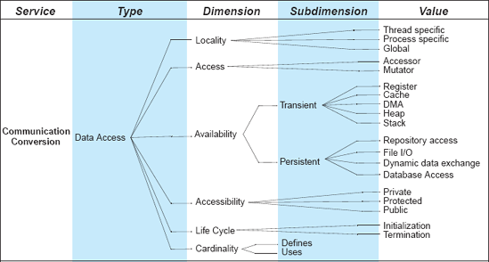
Figuras 5-6. Tipo de conector de acesso a dados e suas variações.
O espaço de opções disponível para um engenheiro de software para construir conectores de acesso a dados é mostrado na Figura 5-6. Um conector de acesso a dados poderia permitir o acesso global; permitir a mutação (ou seja, a alteração) dos dados; podia fornecer acesso persistente via I/O de arquivos; sua cardinalidade normalmente seria uma única entidade que define os dados, mas múltiplas entidades que utilizam os dados; e assim por diante.
Conectores de Ligação
Conectores de ligação são usados para unir os componentes do sistema e mantê-los nesse estado durante sua operação. Conectores de ligação permitem o estabelecimento de dutos — os canais para comunicação e coordenação — que são então usados por conectores de ordem superior para impor a semântica de interação. Em outras palavras, conectores de ligação fornecem serviços de facilitação.
Uma vez estabelecidos os dutos, um conector de ligação pode desaparecer do sistema ou permanecer no lugar para auxiliar na evolução do sistema. Exemplos de conectores de ligação são os links entre componentes e barramentos em uma arquitetura estilo C2 (recallCapítulo 4) e relações de dependência entre módulos de software descritas por linguagens de interconexão de módulos (MIL) (DeRemer e Kron 1976).
O espaço de opções disponível para um engenheiro de software para construir conectores de ligação é mostrado nas Figuras 5-7. Comparado às dimensões anteriores, esta não é uma dimensão de conector particularmente rica. A referência a componentes ligados pode ser implícita, possivelmente até parametrizada e mutável, ou explícita. A dimensão de granularidade refere-se ao tamanho dos componentes e ao nível de detalhe necessário para estabelecer uma ligação. As subdimensões da granularidade (unidade, sintática e semântica) foram diretamente influenciadas pelo estudo fundamental de Dewayne Perry sobre modelos de interconexão de software (Perry 1987):
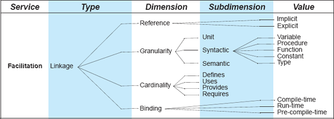
Figura 5-7. Tipo de conector de ligação e suas variações.
A cardinalidade de um conector de ligação refere-se ao número de lugares em que um recurso do sistema — como um componente, procedimento ou variável — é definido, usado, fornecido ou exigido. Normalmente, um recurso é definido e/ou fornecido em um único local e usado ou exigido de múltiplos locais. Por fim, um conector de ligação pode estabelecer a ligação entre componentes muito cedo (ou seja, antes da compilação do sistema), cedo (ou seja, durante a compilação) ou tardio (isto é, durante a execução do sistema).
Conectores de Stream
Os fluxos são usados para realizar transferências de grandes quantidades de dados entre processos autônomos. Conectores de fluxo, portanto, fornecem serviços de comunicação em um sistema. Fluxos também são usados em sistemas cliente-servidor com protocolos de transferência de dados para entregar resultados de computação. Os fluxos podem ser combinados com outros tipos de conectores, como conectores de acesso a dados, para fornecer conectores compostos para realizar acesso a banco de dados e armazenamento de arquivos, e conectores de eventos, para multiplexar a entrega de um grande número de eventos. Exemplos de conectores de fluxo são pipes Unix, soquetes de comunicação TCP/UDP e protocolos proprietários cliente-servidor.
O espaço de opções disponível para um engenheiro de software para construir conectores de fluxo é mostrado nas Figuras 5-8. Por exemplo, um conector baseado em fluxo pode não ter nome, como nos tubos Unix; pode fornecer interação síncrona e remota por meio de dados estruturados; pode garantir pelo menos uma entrega; sua cardinalidade pode ser binária, ou seja, um único emissor e um único receptor; Finalmente, seu valor de estado poderia ser determinado por um buffer limitado.
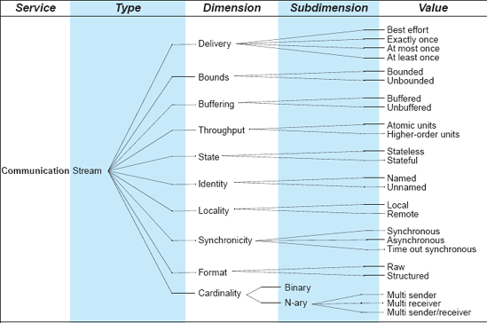
Figuras 5-8. Tipo de conector de fluxo e suas variações.
Conectores Árbitros
Quando os componentes estão cientes da presença de outros componentes, mas não podem fazer suposições sobre suas necessidades e estado, os árbitros simplificam a operação do sistema e resolvem quaisquer conflitos (fornecendo assim serviços de facilitação) e redirecionam o fluxo de controle (fornecendo serviços de coordenação). Por exemplo, sistemas multithread que requerem acesso à memória compartilhada utilizam sincronização e controle de concorrência para garantir consistência e atomicidade das operações. Os árbitros também podem fornecer facilidades para negociar níveis de serviço e mediar interações que exigem garantias de confiabilidade e atomicidade. Eles também oferecem serviços de agendamento e balanceamento de carga. Os árbitros podem garantir a confiabilidade do sistema fornecendo suporte crucial para a confiabilidade na forma de confiabilidade, segurança e proteção.
O espaço de opções disponível para um engenheiro de software para construir conectores arbitradores é mostrado emFiguras 5-9. Conectores arbitrator podem auxiliar no tratamento de falhas do sistema, determinando e capturando falhas de componentes antes que se propaguem. Eles também podem garantir a semântica de concorrência adequada entre os componentes interagindo. Por exemplo, os árbitros podem empregar mecanismos, como semáforos ou monitores, para controlar o acesso aos recursos dos componentes interagindo. Conectores arbitradores também podem suportar transações e garantir diferentes níveis de segurança (vejaCapítulo 13). Por fim, eles podem controlar o escalonamento de execução dos componentes interagindo. Um exemplo específico de conectores árbitro é discutido emSeção 5.5.
Conectores Adaptadores
Conectores adaptadores fornecem facilidades para suportar a interação entre componentes que não foram projetados para interoperar. Adaptadores envolvem a correspondência de políticas de comunicação e protocolos de interação entre componentes, fornecendo assim serviços de conversão. Esses conectores são necessários para a interoperabilidade de componentes em ambientes heterogêneos, como diferentes linguagens de programação ou plataformas de computação. A conversão também pode ser realizada para otimizar as interações dos componentes para um determinado ambiente de execução. Por exemplo, um sistema distribuído pode depender de chamadas de procedimentos remotos (RPC) para todas as interações entre os limites do processo; Se dois componentes interagindo estiverem colocalizados dentro do mesmo processo por um determinado período de tempo, uma chamada de procedimento remota pode ser convertida de forma fluida em uma chamada local durante esse tempo. Adaptadores também podem empregar transformações (por exemplo, consultas de tabelas) para alinhar os serviços necessários às instalações disponíveis.
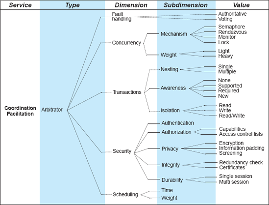
Figuras 5-9. Tipo de conector Arbitrator e suas variações.
O espaço de opções disponível para um engenheiro de software para construir conectores adaptadores é mostrado na Figura 5-10. Exemplos de adaptadores incluem tradução de memória virtual; os adaptadores de Daniel Yellin e Robert Strom (Yellin e Strom 1994), que correspondem a protocolos de interação de componentes incompatíveis; tabelas virtuais de funções usadas para despacho dinâmico de chamadas de métodos polimórficos; e os empacotadores de Robert DeLine, que separam a funcionalidade interna de um componente, chamada de essência, da forma como ele é acessado (DeLine 2001). A intercâmbio de meta-dados XML (XMI) é uma abordagem relativamente recente que suporta a troca de modelos entre aplicações e realiza a conversão de apresentação de dados.
Conectores Distribuidores
Conectores distribuidores realizam a identificação de caminhos de interação e o subsequente roteamento das informações de comunicação e coordenação entre os componentes ao longo desses caminhos. Por isso, eles oferecem serviços de facilitação. Conectores distribuidores nunca existem isoladamente, mas prestam assistência a outros conectores, como fluxos ou chamadas de procedimentos. Sistemas distribuídos trocam informações usando conectores distribuidores para direcionar o fluxo de dados. Sistemas distribuídos exigem a identificação das localizações dos componentes e dos caminhos até eles com base em nomes simbólicos. Serviço de nomes de domínio (DNS), roteamento, comutação e muitos outros serviços de rede pertencem a esse tipo de conector. Distribuidores têm um efeito importante na escalabilidade e sobrevivência do sistema.
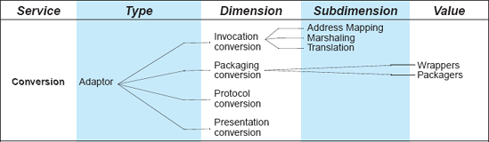
Figuras 5-10. Tipo de conector adaptador e suas variações.
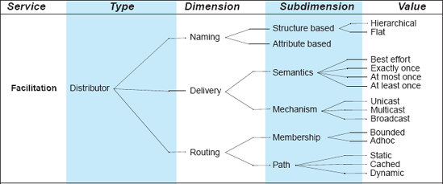
Figuras 5-11. Tipo de conector distribuidor e suas variações.
O espaço de opções disponível para um engenheiro de software para construir conectores distribuidores é mostrado na Figura 5-11. Questões particularmente importantes em sistemas distribuídos são nomeação de recursos, semântica e mecanismos de entrega de dados, e características do roteamento.
CONECTORES EXEMPLOS
O leitor deve estar familiarizado, pelo menos, com os tipos de chamadas de procedimento e conectores de dados compartilhados frequentemente usados. É provável que o leitor tenha visto ou usado vários outros tipos de conectores, como distribuidores ou adaptadores, e também tenha sido exposto a conectores compostos. Além dissoCapítulo 4introduziu vários conectores nos diferentes exemplos do módulo lunar.
Nesta seção, ilustramos a classificação de conectores discutida acima com quatro conectores de distribuição composta amplamente usados atualmente: baseados em eventos, baseados em grade, baseados em cliente-servidor e baseados em peer-to-peer (ou baseados em P2P). Esses conectores distribuem grandes quantidades de conteúdo por uma rede de grande área, como a Internet. Esses conectores são usados na disseminação de música, filmes, dados científicos e assim por diante. Várias implementações desses conectores são amplamente utilizadas por diversos projetos de pesquisa, indústria e governos, além de um grande número de pessoas ao redor do mundo.
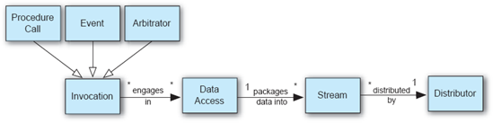
Figuras 5-12. Conectores de distribuição de dados envolvem um tipo de invocação (via conectores de chamada de árbitro, evento ou procedimento), acesso a dados, fluxo e distribuição. A cardinalidade é indicada de acordo nas setas de relacionamento, onde * se refere à cardinalidade de "muitos".
Conectores de distribuição podem ser descritos como diferentes combinações de seis dos tipos de conectores definidos na classificação deSeção 5.4. A combinação exata das dimensões dos seis tipos varia entre os diferentes conectores de distribuição, mas, em geral, cada conector de distribuição realiza algum tipo de acesso aos dados, envolvendo uma leitura (e embalagem) baseada em fluxo, além da distribuição dos dados aos usuários finais. Algumas classes conectores são invocadas por meio de chamadas de procedimento (por exemplo, baseadas em cliente-servidor), enquanto outras são invocadas por meio de eventos (por exemplo, baseadas em eventos) ou arbitragem (por exemplo, baseadas em P2P).Figuras 5-12ilustra as escolhas e os relacionamentos.
O restante desta seção descreve cada um dos quatro conectores de distribuição de dados usando a classificação de conectores deSeção 5.4. A descrição aparentemente prolixa dos conectores é necessária: ela reflete o número de preocupações que um arquiteto precisa considerar ao selecionar e compor conectores para um sistema específico, assim como o número de decisões que serão tomadas no processo.
Conectores de Distribuição de Dados Baseados em Eventos
Os conectores de distribuição de dados baseados em eventos são composições de quatro dos tipos de conectores deSeção 5.4: evento, acesso a dados, streaming e distribuidor. Esses conectores enviam e recebem dados por meio de notificações assíncronas chamadasEventos. Os eventos podem ocorrer de acordo com algum cronograma periódico fixo ou em intervalos aperiódicos discretos. Normalmente, há muitos produtores e consumidores de dados em conectores de distribuição baseados em eventos. Por exemplo, servidores de dados científicos (produtores) podem alertar cientistas (consumidores) sobre a disponibilidade de novos conjuntos de dados. Conectores de distribuição baseados em eventos frequentemente empregam um método assíncrono de entrega de melhor esforço para dados, sem garantir a conclusão ou o momento das entregas dos dados. Eventos de entrega de dados enviados pelos conectores podem ser priorizados, adaptados a diferentes casos de uso ou ambientes de implantação, e especificados pelos usuários do sistema. Os eventos podem ser entregues usando filas priorizadas em threads, gerenciados local ou remotamente, ou ser entregues usando preferências registradas pelo usuário e o mecanismo de entrega de publicação-assinatura.
Conectores de distribuição baseados em eventos podem acessar e mutar dados tanto no lado do produtor quanto do consumidor. Conectores de distribuição baseados em eventos acessam dados transitórios e persistentes, tanto públicos quanto privados. Eles se comunicam com repositórios transitórios baseados em sessões, como memórias compartilhadas [por exemplo, Derby da Apache (Apache Software Foundation)]. Eles também se comunicam com repositórios persistentes, como repositórios, bancos de dados, sistemas de arquivos e páginas da Web.
Após o acesso aos dados por conectores de distribuição baseados em eventos, os dados são tipicamente empacotados em fluxos, tanto estruturados quanto brutos, usando uma abordagem de melhor esforço, com tamanho de pacote limitado e buffering de dados. Os fluxos podem ser identificados por meio de identificadores uniformes de recursos (URIs) nomeados e construídos usando o modo assíncrono de operação. Os fluxos podem ser construídos local ou remotamente, dependendo de como os dados foram acessados.
Dados baseados em fluxo são distribuídos dos produtores de dados para os consumidores de dados usando um registro de nomenclatura, por meio de um modelo de nomenclatura hierárquica ou plana. Os fluxos de dados são entregues como eventos usando a entrega do melhor esforço e qualquer combinação dos mecanismos de entrega unicast, broadcast e multicast. O roteamento de eventos é tipicamente determinado pela camada específica de rede do ambiente de implantação do conector.
Exemplos de conectores de distribuição de dados baseados em eventos incluem o middleware public-subscribe da Siena (Carzaniga, Rosenblum e Wolf 2001), o middleware Prism-MW (Malek, Mikic-Rakic e Medvidoviç 2005) e sua extensão subsequente que permite localização e descoberta de recursos na grade, chamada GLIDE (Mattmann et al. 2005).
Conectores de Distribuição de Dados Baseados na Rede
Os conectores de distribuição de dados baseados em grade são composições de quatro dos tipos de conectores deSeção 5.4: chamada de procedimento, acesso a dados, fluxo e distribuidor. Esses conectores movimentam e entregam grandes quantidades de dados entre componentes de software implantados no ambiente grid — uma rede virtual de computação compartilhada e recursos de dados. Embora a grade seja discutida mais detalhadamente emCapítulo 11, esta seção descreverá a arquitetura dos conectores correspondentes. O leitor pode achar útil retornar a esta seção após a leituraCapítulo 11.
Conectores de distribuição baseados em grade são invocados por meio de uma chamada de procedimento sincrônica nomeada, frequentemente como uma chamada de serviço Web enviada usando o Simple Object Access Protocol (SOAP) (Mitra 2003). Credenciais de autenticação do usuário são fornecidas ao conector para integração com a Grid Security Infrastructure (GSI), um kit de ferramentas altamente seguro baseado em pares de chaves e autoridades certificadoras. URLs enviadas via invocação do conector descrevem onde os dados estão e para onde devem ser enviados (ou seja, quem são os consumidores). Os parâmetros são passados por valor usando a semântica "palavra-chave igual a valor", com mensagens de controle sendo registradas na camada logarista da API Grid.
Conectores de distribuição baseados em grade acessam e mutam dados transitórios e persistentes, tanto privados quanto públicos, desde que haja algum tipo de API padrão (por exemplo, troca dinâmica de dados via XML, acesso a repositório ou I/O de arquivos) para acessá-los.
O acesso a dados por meio de um conector de grade é tipicamente empacotado como um fluxo de bytes (ou blocos, configurados via parâmetro) com entrega exata uma vez e buffering limitado (configurável) fornecido pelo nível TCP/IP da rede. Os dados podem ser estruturados ou brutos. O buffering e o throughput de dados são paralelizados por meio de múltiplos fluxos TCP/IP síncronos de time-out concorrentes. Os fluxos são nomeados URLs e URIs com estado, e podem existir tanto local quanto remotamente, dependendo de onde os dados foram acessados. Um fluxo pode ser entregue a muitos consumidores.
Conectores de distribuição baseados em grade distribuem dados usando o ambiente de grade para nomeação e localização, incluindo os componentes Grid Meta-data Catalog Service (MCS) e Replica Location Service (RLS), além de URLs e URIs nomeados. A nomeação pode ser hierárquica, com recursos e locais compartilhando relações entre pais e filhos via MCS. Alternativamente, nomear e descobrir pode ser plano e baseado em estruturas. Os dados são entregues via unicast paralelizado exatamente uma vez, usando fluxos concorrentes TCP/IP, inundando a rede subjacente até sua saturação, facilitando assim o uso mais eficiente possível da largura de banda disponível. As medidas de confiabilidade permitem a reentrega de pacotes perdidos se necessário, assim como transferências parciais de dados, tanto sequenciais quanto fora de ordem. O roteamento dos dados é gerenciado pela camada de rede TCP/IP subjacente.
Exemplos de conectores de distribuição baseados em grade incluem o software GridFTP, incluído junto com o Globus Grid Toolkit (The Globus Alliance), e o protocolo de transferência de arquivos grandes, ou bbFTP (Farrache 2005).
Conectores de Distribuição de Dados Baseados em
Cliente-Servidor
Os conectores de distribuição baseados em cliente-servidor permitem a distribuição contínua de dados entre sistemas distribuídos usando RPC. Eles são composições de quatro dos tipos de conectores deSeção 5.4: chamada de procedimento, acesso a dados, fluxo e distribuidor. Esses conectores são invocados por meio de uma chamada de procedimento remoto síncrona que parece (para os consumidores de dados) como se fosse uma chamada de método local. Parâmetros de palavras-chave (nomeados) são passados para a chamada de método para especificar as restrições de distribuição, com parâmetros sendo passados por valor ou referência, dependendo da implementação subjacente da chamada de procedimento remoto. Os métodos podem ter valores de retorno, que normalmente devem estar em conformidade com um conjunto padrão de tipos de dados primitivos suportados em todas as máquinas envolvidas na distribuição de dados. Métodos são interações entre um emissor e um receptor, tipicamente o produtor dos dados e seu consumidor, respectivamente.
Ao ser invocado, o conector de distribuição cliente-servidor realiza um acesso aos dados, capturando e mutando dados persistentes e transitórios. Após o acesso aos dados, eles são embalados em fluxos que são entregues usando uma entrega exata e tamanho de pacote limitado gerenciado pelo protocolo TCP/IP subjacente. Os dados podem ser brutos ou estruturados no fluxo. O débito do fluxo é medido em unidades atômicas (bits por segundo), e os fluxos são identificados usando Nomes Uniformes de Recursos (URNs) com estado. Os fluxos podem ser locais ou remotos, dependendo de onde os dados foram acessados ou organizados.
Os dados são distribuídos a partir de conectores baseados em cliente-servidor usando um registro de nomes para localizar o consumidor solicitante dos dados. Os dados são entregues por meio de parâmetros de método (ou interface) e valores de retorno. É enviado exatamente uma vez, usando o mecanismo de entrega unicast. O roteamento é realizado pela rede TCP/IP subjacente usando a membresia estática identificada por meio de um registro de nomenclatura.
Exemplos de conectores de distribuição de dados baseados em cliente-servidor incluem HTTP/REST (recallCapítulo 1), Java RMI, CORBA (recallCapítulo 4), FTP, SOAP e muitas tecnologias comerciais de UDP.
Conectores de Distribuição de Dados Baseados em P2P
Os conectores de distribuição de dados baseados em P2P são composições de quatro dos tipos de conectores deSeção 5.4: árbitro, acesso a dados, fluxo e distribuidor. Esses conectores são diferentes das outras três categorias. Em vez de fornecer algum tipo de invocação procedural inicial ou baseada em eventos, esses conectores normalmente dependem da arbitragem como meio de sincronização e invocação. A arbitragem envolve o redirecionamento do fluxo de controle entre recursos distribuídos, ou pares, operando em um ambiente em rede. Os árbitros podem negociar protocolos, agendamento e questões de tempo. O tratamento de falhas e a passagem de parâmetros são tratados de forma igualitária por meio de votação e comunicação ponto a ponto ou ponto para muitos entre pares ou grupos de pares. Conectores de distribuição baseados em P2P usam o rendezvous como mecanismo para alcançar concorrência e escalonamento. O suporte a transações está frequentemente disponível, e a invocação pode ser revertida, se necessário.
Ao ser invocados, os pares em um conector de distribuição baseado em P2P realizam acesso a dados, acessando dados transitórios (tanto específicos de processo quanto de thread) e persistentes (por exemplo, repositório, I/O de arquivos, etc.). Como os pares podem entrar e sair em cenários baseados em P2P, na maioria das vezes o acesso a dados é transitório: um par não precisa permanecer durante toda a distribuição.
Os dados são acessados e empacotados via fluxos, usando um mecanismo limitado pelo melhor esforço. Os dados podem ser estruturados ou brutos, desde que possam ser organizados em blocos identificáveis que possam ser retransmitidos e compartilhados entre pares tratados pelo conector. Os fluxos são nomeados URNs, normalmente identificados por algum algoritmo de hashing (como SHA-1 ou MD5), e estão disponíveis tanto local quanto remotamente, dependendo de onde os dados foram acessados ou empacotados.
Os dados são distribuídos nos conectores de distribuição baseados em P2P, localizando outros pares que possuem pedaços de dados que o usuário deseja obter ou distribuir. A localização de outros pares é baseada em atributos como tipo de recurso, SHA-1 e outros metadados específicos de domínio (por exemplo, para arquivos de filmes pode ser usado "produtora" ou para música "nome do artista"). A entrega ocorre na forma de chunks, enviados para e de pares remotos usando semântica de melhor esforço ou pelo menos uma vez sobre canais de transmissão unicast e multicast. O roteamento, embora influenciado pela camada de rede subjacente, é gerenciado por algum tipo de mecanismo de rastreamento, às vezes chamado de trackers ou super peers. Mecanismos de rastreamento permitem a localização de blocos de fluxos de dados que precisam ser distribuídos ou obtidos em um conector baseado em P2P.
Exemplos de exemplos da classe de conectores de distribuição baseados em P2P incluem BitTorrent (Cohen 2003) e distribuidores de dados baseados em JXTA, como o projeto Peerdata no Laboratório de Propulsão a Jato da NASA. Sistemas P2P que utilizam tais conectores são discutidos emCapítulo 11.
USANDO A ESTRUTURA DE CONECTORES
Esta seção fornece diretrizes gerais para arquitetos de software na escolha de conectores que atendam às suas necessidades. A seção discute a questão da compatibilidade dos conectores: Entender quais conectores, ou dimensões dos conectores, são e quais não são compatíveis é particularmente importante nos casos em que conectores compostos são necessários.
Seleção de Conectores Apropriados
Ao selecionar um conector de software que atenda às necessidades particulares de um determinado (sub)sistema, um arquiteto de software deve realizar pelo menos as seguintes etapas. Note que as descrições das etapas são relativamente gerais, o que significa que esse processo coloca grande responsabilidade sobre os arquitetos de software e exige grande familiaridade com os detalhes técnicos dos conectores à sua disposição.
A classificação dos conectores descrita emSeção 5.4assim, serve como base para sintetizar novos conectores, bem como para analisar a compatibilidade das dimensões dos conectores. Instanciar as dimensões de um único tipo de conector escolhendo um ou mais valores forma uma espécie simples de conector. Por outro lado, usar valores de dimensões de diferentes tipos de conectores leva a uma espécie de conector composta (de ordem superior). Muitos cenários do mundo real forçam um arquiteto a compor esses conectores de ordem superior para satisfazer todos os requisitos da aplicação.
O leitor deve notar que criar conectores compostos sem precedentes não é uma tarefa trivial. No mínimo, isso exige desenvolver um entendimento profundo das características complementares, ortogonais e incompatíveis dos conectores. Sem esse entendimento, o processo de integração resultante pode ser equivocado e as soluções desenvolvidas subótimas ou, pior, completamente ineficazes. Exemplos disso foram documentados na literatura [por exemplo, no conhecido caso das interações entre os grandes componentes usados no sistema Aesop (Garlan, Allen e Ockerbloom 1995)].
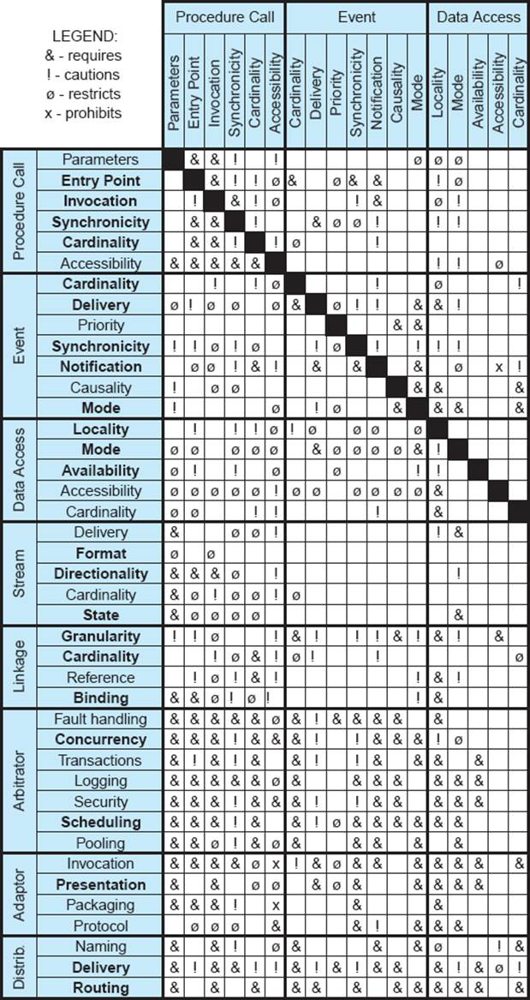
Figuras 5-13. Matriz de compatibilidade de conectores.
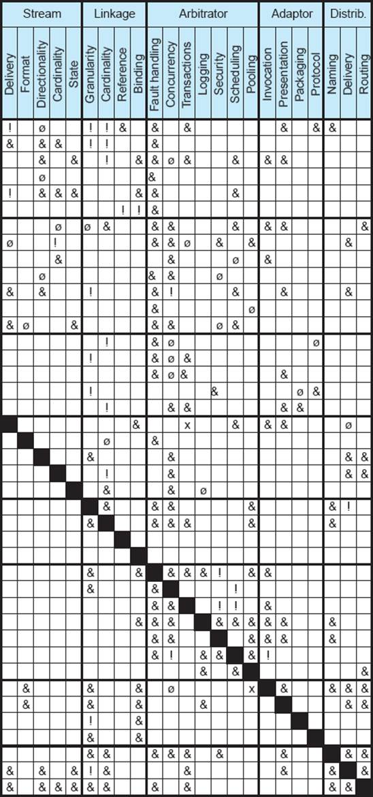
Na ausência de um conjunto de regras concretas, bem compreendidas e amplamente adotadas para definir conectores compostos, torna-se difícil orientar esse processo. Pesquisas recentes, por exemplo, de Bridget Spitznagel e David Garlan (Spitznagel e Garlan 2003) sugerem alguns formalismos e estratégias específicas que podem ser adotados para abordar a composição dos conectores. No entanto, em última análise, uma classificação abrangente dos conectores, como a apresentada neste capítulo, é necessária (embora não suficiente) para criar um conjunto geral de diretrizes que especifiquem as condições sob as quais dois ou mais conectores podem ser compostos. Vamos discutir essa questão com mais profundidade a seguir.
Detecção de Incompatibilidades
A taxonomia do conector introduzida emSeção 5.4pode ser aproveitado para identificar possíveis incompatibilidades entre dimensões incompatíveis dos conectores e evitar tais combinações.Figuras 5-13mostra uma matriz de compatibilidade para as dimensões do conector identificadas na classificação deFigura 5-4atravésFigura 5-11. A matriz fornece orientações sobre quais combinações de dimensões são necessárias e quais devem ser evitadas; as células vazias na matriz indicam combinações que são possíveis, mas não necessárias. A escassez da matriz sugere que o espaço de projeto permitido dos conectores é muito grande com base no entendimento atual deles. Ao mesmo tempo, sabe-se que existem algumas armadilhas. Quatro tipos de regras para combinar dimensões de conectores podem ser identificados: exige, adverte, restringe e proíbe.
A regra do requis indica que a escolha de uma dimensão em uma espécie conectora exige que outra dimensão seja selecionada em outra espécie conectora; ela também permite todas as combinações possíveis dos valores da dimensão dada e sua codimensão requerida. Por exemplo, se um distribuidor e um conector adaptador são compostos, a entrega do distribuidor exige que o adaptador suporte conversão de apresentação, ou seja, que permita que dados sejam organizados para transporte entre espaços de endereçamento.
Requires é uma regra de encadeamento e é usada como ponto de partida para construir a espécie de conector base. Por exemplo, um conector de eventos que requer semântica de entrega também precisa de uma dimensão de notificação, que por sua vez requer cardinalidade, sincronicidade e modo. Essa regra de encadeamento resulta na identificação de dimensões que são obrigatórias em todas as espécies de um tipo de conector, e daquelas que são opcionais. Na Figura 5-13, as dimensões obrigatórias estão em negrito, enquanto as dimensões opcionais estão em fonte normal.
A regra dos avisos indica que certas combinações de valores para duas dimensões de conectores que precisam ser usadas em conjunto, embora válidas, podem resultar em um conector instável ou não confiável. Por exemplo, um componente invocado implicitamente não deve ter múltiplos pontos de entrada, já que um mecanismo de invocação implícito não pode escolher entre os pontos de entrada. Outro exemplo é a relação entre a dimensão de concorrência do conector arbitrador e a dimensão de localidade do conector de acesso a dados: o nível de granularidade no qual a concorrência é suportada pelo primeiro (peso pesado versus leve) deve corresponder ao nível em que a localidade é suportada pelo segundo (específico do processo versus específico da thread).
A regra dos restritos é usada para indicar que as duas dimensões não precisam ser usadas juntas o tempo todo, e que existem certas combinações de seus valores que são inválidas. Por exemplo, o acesso a dados específico de threads não pode usar concorrência pesada (veja a interseção da localidade de acesso aos dados com a concorrência do árbitro). Da mesma forma, passar parâmetros pelo nome quando esses parâmetros têm apenas disponibilidade transitória pode fazer com que os valores desses parâmetros desapareçam, sejam alterados ou sejam afetados por alguma condição de leitura-modifica-escrita; O problema se agrava quando esses parâmetros são passados por referência e o procedimento não tem onde armazenar seus novos valores ou acessar os antigos (veja a interseção entre parâmetros de chamada de procedimento com disponibilidade de acesso a dados).
Por fim, a regra de proibição é usada para excluir qualquer combinação de duas dimensões e indica total incompatibilidade entre as dimensões. Por exemplo, a entrega em fluxo não pode ser construída sobre a atomicidade transacional (veja a interseção entre entrega em fluxo e transações árbitro). Como pode ser visto na Figura 5-13, há relativamente poucos casos da relação proibidos. Isso é um indicativo positivo, pois mostra que a maioria das combinações de conectores é legal pelo menos em algumas circunstâncias. Ao mesmo tempo, o grande número de relações de restrição e advertência nas Figuras 5-13 também indicam que arquitetos de software devem ter cuidado ao compor conectores.
Embora a discussão acima tenha sido restrita às combinações binárias das dimensões dos conectores, as relações de compatibilidade entre dimensões são transitivas. Em outras palavras, as regras de compatibilidade podem ser aplicadas sucessivamente para determinar a compatibilidade n-ária entre dimensões. As relações binárias descritas nesta seção serviriam como ponto de partida necessário para analisar as relações n-árias.
O estudo explícito e direcionado de conectores de software é uma ocorrência relativamente recente. Ainda há muitos detalhes que precisam ser descobertos e os entendimentos melhorados. As figuras 5-13 indicam isso: as seções mais esparsas da matriz de compatibilidade argumentam a necessidade de maior compreensão de certas combinações de tipos de conectores (como acesso a dados e fluxo). É razoável esperar que, à medida que nosso entendimento sobre conectores melhora com o tempo, a matriz de compatibilidade, assim como a lógica por trás dela, também evoluam.
ASSUNTO FINAL
Todo sistema de software utiliza conectores, frequentemente muitos deles. Em sistemas distribuídos complexos, em particular, conectores podem ser os principais determinantes para determinar se as propriedades desejadas do sistema serão alcançadas. Essa observação é frequentemente feita, mas conectores nem sempre recebem status de primeira classe em sistemas de software, e certamente não foram estudados na mesma extensão que componentes.
Este capítulo apresentou um estudo detalhado dos conectores de software. No nível mais básico, cada conector estabelece um conduíte (que pode ser pensado, e chamado, de canal ou duto virtual) para que dois ou mais componentes interajam trocando controle e dados em um sistema de software. A forma real como dados e/ou controle são trocados, entretanto, e as características específicas dessa troca podem variar bastante. É isso que torna o espaço dos conectores de software bastante grande e complexo.
Como este capítulo argumentou, o espaço dos conectores pode ser melhor compreendido considerando o papel (ou papéis) desempenhados por um dado conector e o tipo (ou tipos) de interação suportada pelo conector. Ao mesmo tempo, o grande número de pontos de variação para cada tipo de conector (as dimensões, subdimensões e valores introduzidos emSeção 5.4) exigem que as (in)compatibilidades entre conectores sejam consideradas cuidadosamente. Embora essa área claramente exija mais estudo, o corpo de conhecimento existente, se aplicado com criterio, pode ser uma grande ajuda para arquitetos e desenvolvedores de software.
Os capítulos seguintes usarão isso, assim como os capítulos anteriores, como base para apresentar ao leitor a várias atividades-chave no desenvolvimento de software orientado por arquitetura.Capítulo 6foca nos princípios da modelagem de arquitetura e apresenta os detalhes de várias linguagens de descrição de arquitetura de software.Capítulo 7apresenta ao leitor as abordagens para visualizar arquiteturas de software.Capítulo 8fornece uma visão geral da análise arquitetônica.Capítulo 9discute os desafios e soluções para a implementação de sistemas baseados em arquitetura. FinalmenteCapítulo 10foca nas preocupações pós-implementação de implantação de sistemas e mobilidade em tempo de execução.
O Caso de Negócios
A engenharia de sistemas de software complexos é difícil e cara. Em particular, compor componentes grandes, muitos dos quais podem não ter sido desenvolvidos para "jogar" juntos, pode causar sistemas inchados com desempenho inaceitável, atrasos no cronograma dos projetos e estouros orçamentários. Exemplos de projetos de software que se encaixam nessa descrição geral são abundantes.
Se os conectores nesses cenários não forem considerados explicitamente, então cada par de componentes que precisa ser integrado pode precisar ser tratado separadamente. Embora a experiência passada possa ser útil para arquitetos e desenvolvedores desses sistemas, as técnicas geralmente aplicadas (por exemplo, wrappers de construção e "código de cola") precisarão ser reaplicadas em cada caso individual. Além disso, esse código de integração frequentemente estará fortemente acoplado a um ou mais dos componentes interagindo, tornando sua reutilização difícil ou impossível. Talvez o mais importante seja que, ao voltar constantemente à mesma caixa de ferramentas de integração, os engenheiros de software provavelmente perderão soluções mais apropriadas e talvez menos custosas para integração e interação de componentes.
Ter um entendimento íntimo dos conectores e tratá-los separadamente dos componentes pode potencialmente resolver todas as preocupações acima. Uma propriedade útil dos conectores, que não é compartilhada por muitos componentes, é que eles são em grande parte independentes da aplicação. Isso significa que existe, na verdade, um número finito (embora muito grande) de desafios de interação e integração de componentes. Muitos desses desafios podem ser semelhantes entre produtos semelhantes (por exemplo, em uma família de produtos) ou dentro de um determinado domínio de aplicação.
Uma determinada organização de desenvolvimento de software poderia, assim, desenvolver e expandir um grande arsenal reutilizável de conectores explícitos, que, por sua vez, ajudariam a reduzir os custos de projetos futuros.
PERGUNTAS DE REVISÃO
EXERCÍCIOS
LEITURA ADICIONAL
Conectores de software têm sido um aspecto importante no desenvolvimento de sistemas grandes e complexos intensivos em software há muito tempo. Embora possam não ter sido o foco principal de estudo, e talvez não tenham sido identificados explicitamente, os conectores tiveram papel proeminente nos sistemas operacionais, linguagens de programação, sistemas distribuídos, redes de computadores e literatura de middleware [por exemplo (Reiss 1990), (Colouris, Dollimore e Kindberg 1994), (Yellin e Strom 1994), (Orfali, Harkey e Edwards 1996)].
O foco explícito em conectores de software é mais recente e surgiu a partir do corpo de trabalhos relacionados à arquitetura de software. Perry (Perry 1987) forneceu a base necessária em seu estudo sobre modelos de interconexão de software. Perry e Wolf (Perry e Wolf 1992) foram os primeiros a sugerir conectores como entidades de primeira classe em uma arquitetura de software, e Shaw e Garlan (Shaw 1994; Shaw, DeLine e Zelesnik 1996; Shaw e Garlan (1996) logo seguiram o exemplo. Allen, Garlan e Ockerbloom (Garlan, Allen e Ockerbloom 1995) demonstraram que conectores explícitos podem fornecer um auxílio substancial na especificação do sistema e podem carregar um poder analítico inerente significativo.
Vários pesquisadores tentaram classificar conectores como um auxílio para arquitetos de software na tomada das escolhas de design mais apropriadas. Um dos primeiros esforços de Hirsch, Uchitel, e Yankelevich (Hirsch, Uchitel, e Yankelevich 1999) foi limitado em escopo, mas inspirou diretamente o estudo mais detalhado de Mehta, Medvidović e Phadke (Mehta, Medvidović e Phadke 2000), que foi amplamente referenciado neste capítulo. Bálek e Pláš il (Balek e Plasil 2001) propuseram um modelo formal de conector para lidar com implantação de software (recallCapítulo 3). Em particular, eles postulam que o conjunto básico de serviços dinâmicos que um conector deve fornecer para auxiliar a implantação corresponde diretamente às categorias-chave de serviços na taxonomia de Mehta et al.: controle e transferência de dados, adaptação e conversão de interfaces de dados, coordenação e sincronização de acessos, interceptação de comunicações e ligação dinâmica de componentes. Bálek e Plášil demonstram adicionalmente que seus conectores podem ser compostos para fornecer serviços de interação mais avançados, de forma semelhante ao trabalho posterior de Spitznagel e Garlan (Spitznagel e Garlan 2003).